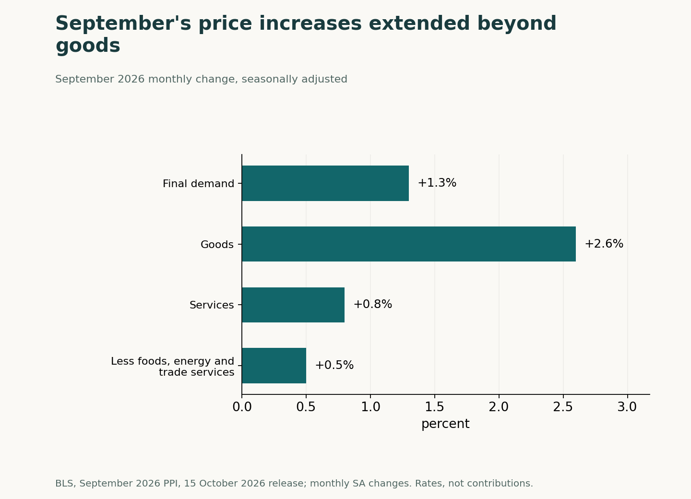
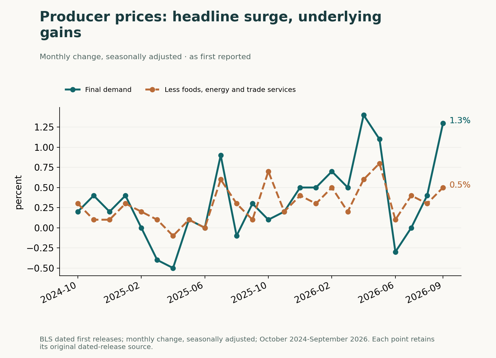
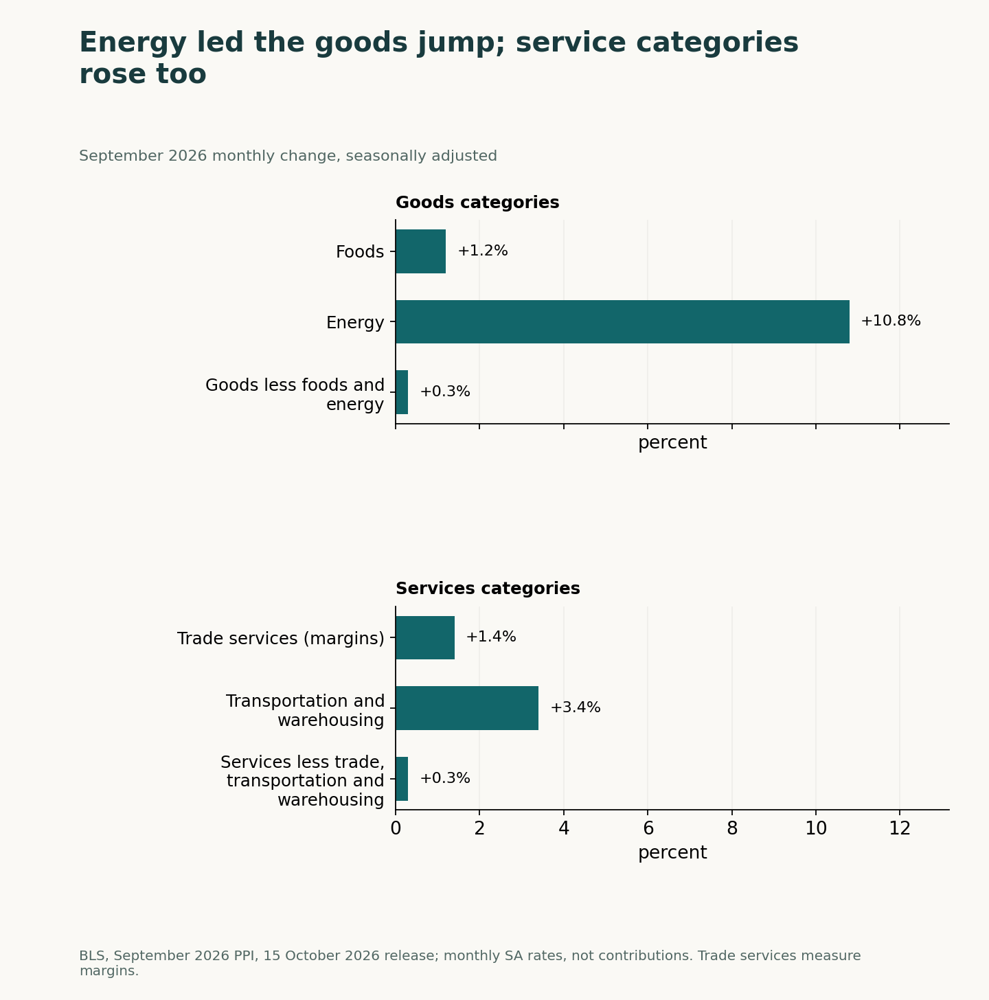

The September 2026 Producer Price Index combined a 1.3% monthly headline increase with a 0.5% rise excluding foods, energy and trade services, according to the U.S. Bureau of Labor Statistics release of 15 October 2026. Energy dominated the increase in goods prices, while services rose too. The question is how much of that pressure extended beyond the biggest commodity move.
Our reading is that the component mix deserves as much attention as the headline. September showed positive price changes across several categories, but the size of the energy jump makes it especially important to separate a one-month shock from evidence of persistence.
September's jump was broad, but uneven
Final demand goods rose 2.6% in September and services rose 0.8%. The measure excluding foods, energy and trade services increased 0.5%, following 0.3% in August as stated in the September release. All these monthly rates are seasonally adjusted.
The underlying measure is a separate view of the same price system, with those categories excluded. It overlaps the goods and services aggregates; its rate is not an extra contribution to add to them. The comparison shows both the goods surge and the smaller gains that remained after the exclusions.

How September compares with two years of first releases
The history chart follows the monthly changes as first reported in dated BLS releases, from October 2024 through September 2026. On that basis, September's 1.3% headline increase was below April 2026's 1.4%. The underlying measure also varied across the period: its September increase of 0.5% was below May 2026's first-reported 0.8%.
That history differs from a chart rewritten with later revisions. August headline PPI was first reported at 0.4%; the September release revised it to 0.5%. July was initially unchanged and stood at 0.2% in the September release. Thus the September-release comparison is 1.3% after 0.5%, while the first-release chart preserves the earlier observations.

Energy and trade margins explain the split
In the September 2026 release, BLS attributed over 80% of the goods increase to energy, which rose 10.8%. Services prices also rose 0.8%.
Within goods, foods rose 1.2% and the index excluding foods and energy rose 0.3%. Those figures explain why a strong goods total need not mean similarly large price increases in every goods category. The energy share cited by BLS describes the goods increase, not the entire final-demand increase.
Services had their own composition. Trade-service margins rose 1.4%, accounting for nearly half of the services increase, according to BLS. Transportation and warehousing services rose 3.4%, while services excluding trade, transportation and warehousing rose 0.3%. Trade services here refer to margins, a distinction that matters when interpreting that category.
The component chart compares each category's own monthly rate. It is not a contribution waterfall: adding these rates, or treating the energy rate as a percentage-point contribution to headline inflation, would misread the figures. The services detail provides a separate check on the idea that September was exclusively an energy story.

The limits of a one-month signal
The September 2026 countercase is concentration: goods excluding foods and energy rose 0.3%, and services excluding trade, transportation and warehousing also rose 0.3%.
Those narrower gains were positive, yet much smaller than the energy increase. That is the strongest reason to resist treating the headline pace as representative of every component or extrapolating it as a continuing monthly rate. The release supports a distinction between concentrated strength and the smaller increases elsewhere.
A lasting inflation signal from the September 2026 release would require repeated gains outside energy; weaker underlying readings would challenge it.
That is a test for an interpretation, rather than a forecast supplied by this release. These producer-price observations alone do not establish a consumer-inflation outcome or an automatic Federal Reserve response. The unresolved issue is whether pressure beyond energy persists, not whether the largest monthly number can stand in for the whole report.
Retrospective analysis, written on 5 November 2026 (GMT+7). This article examines the September PPI release of 15 October 2026 and earlier dated releases.
Analysis, not financial advice. Readers decide whether to trade.
Analysis, not financial advice.